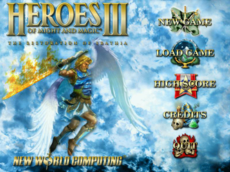
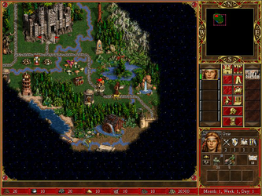

Heroes of Might and Magic 3
Dieser Artikel wurde für die folgenden Ubuntu-Versionen getestet:
Ubuntu 16.04 Xenial Xerus
Zum Verständnis dieses Artikels sind folgende Seiten hilfreich:
Heroes of Might and Magic III (HOMM) ist der dritte und erfolgreichste Teil der gleichnamigen Rollenspielreihe von New World Computing. Der König Erathias ist von Verrätern ermordet worden. Als untoter Kriegsherr kehrt er als Invasor zurück. Es gibt kaum Widerstand bis seine Tochter Catherine, Königin von Enroth, in ihre Heimat zurückkehrt. Sie befiehlt eine Armee von Elite-Kämpfern und muss sämtliche Angreifer vertreiben und den Mörder ihres Vaters finden, um den Frieden in Erathia wiederherzustellen.
Die Erweiterungen Armageddon's Blade und The Shadow of Death sind nicht unter Linux erschienen.
|  |  |
| Hauptmenü | Spielszene |
Installation¶
Zur Installation [1] legt man die CD-ROM ins Laufwerk und lädt den aktuellen Installer von liflg.org 
 oder holarse-linuxgaming.de herunter. Nachdem man die Ausführrechte [2] gesetzt hat startet man die Installation [3]:
oder holarse-linuxgaming.de herunter. Nachdem man die Ausführrechte [2] gesetzt hat startet man die Installation [3]:
./homm.3_1.3.1a-english_x86.mojo.run
Es erscheint der grafische Installer. Hier alle gewünschten Installationsoptionen anwählen und das Spiel in den Ordner ~/Spiele/homm3 installieren. Im Menü ist das Spiel anschleßend unter "Anwendungen -> Spiele" zu finden.
Das Spiel kann ebenfalls mit heroes3 gestartet werden [4]. Hierbei legt es im Homeverzeichnis den Ordner ~/.loki/heroes3 an.
Weitere Startparameter, die auch kombiniert genutzt werden können:
| Startoptionen | |
| Parameter | Beschreibung |
-w | Spiel startet im Fenstermodus. |
-s | Soundwiedergabe wird gestoppt. |
-h | weitere Optionen |
Zusatzkarten¶
Für das Spiel stehen zusätzliche Karten zur Verfügung. Diese liegen im Format h3m (Heroes 3 Map File) vor und beinhalten relevante Informationen zum Gelände, den Charakteren und den Gegenständen auf der Karte. Kartenmaterial kann von einer der folgenden Seiten heruntergeladen werden:
Die heruntergeladene Datei entpacken [5] und die Karte, z.B. MIDDLEEARTHXL3.h3m, in den Ordner ~/Spiele/homm3/maps im Installationsverzeichnis kopieren.
Problembehebung¶
Sound knattert¶
Das Spiel verwendet zur Soundwiedergabe OSS - dies kann auf neueren Systemen zu einem knatternden Sound führen. Eine mögliche Lösung besteht darin den ALSA-OSS-Commpatibility-Layer zu nutzen oder die Startoptionen zu verändern.
Demo¶
Eine Demoversion des Spiels kann nach dieser Anleitung installiert werden.

Infobox¶
| Heroes of Might and Magic III - The Restoration of Erathia | |
| Genre: | Rollenspiel |
| Sprache: |  |
| Veröffentlichung: | 1999 |
| Publisher: | The 3DO Company / Loki |
| Systemvoraussetzungen: | Prozessor mind. 200 MHz - mind. 32 MB RAM - mind. 150 MB Festplattenspeicher |
| Medien: | CD (1) |
| Strichcode / EAN / GTIN: | 689524817594 |
| Läuft mit: | nativ |
- Erstellt mit Inyoka
-
 2004 – 2017 ubuntuusers.de • Einige Rechte vorbehalten
2004 – 2017 ubuntuusers.de • Einige Rechte vorbehalten
Lizenz • Kontakt • Datenschutz • Impressum • Serverstatus -
Serverhousing gespendet von